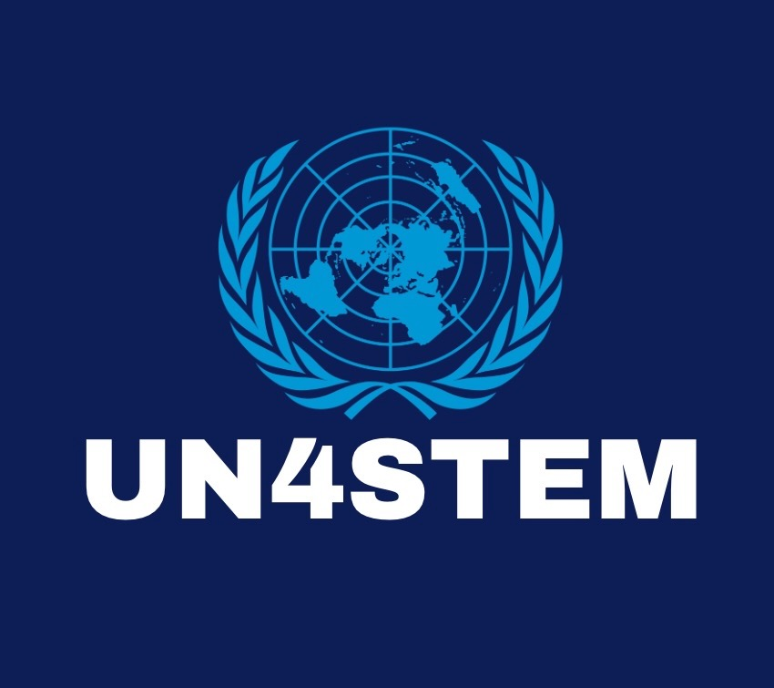
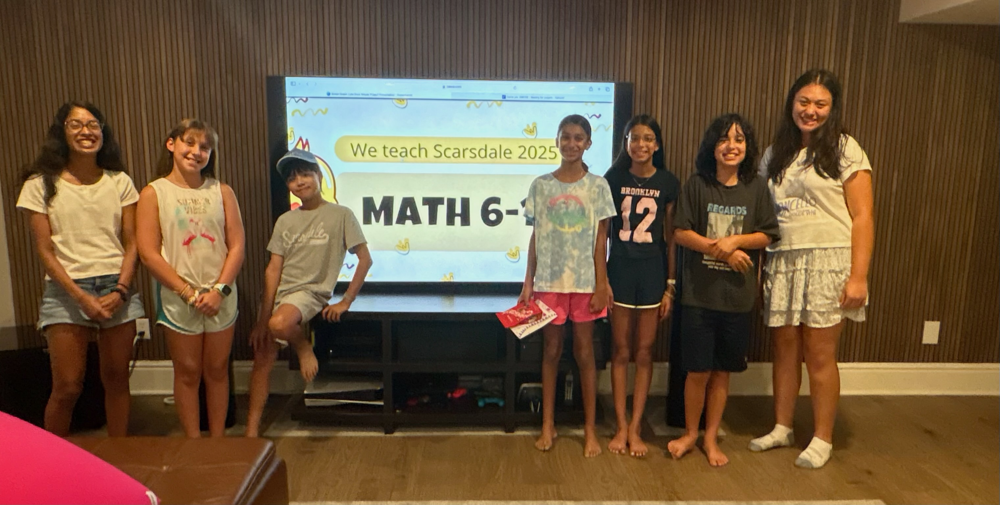
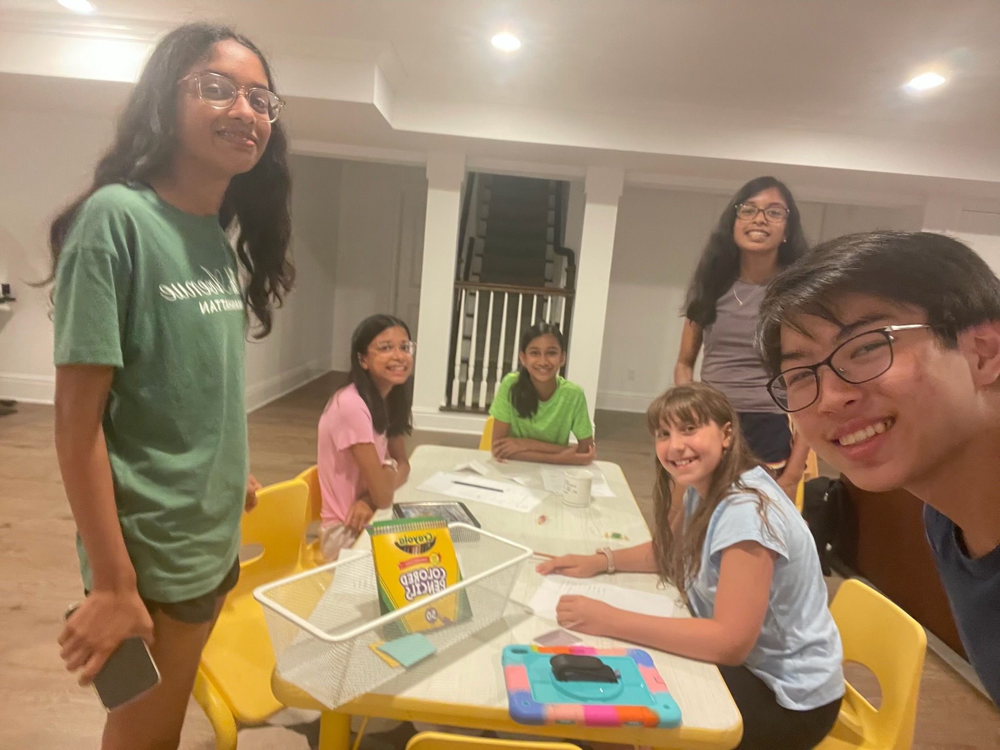
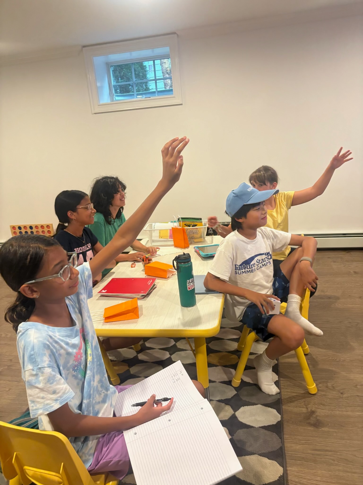
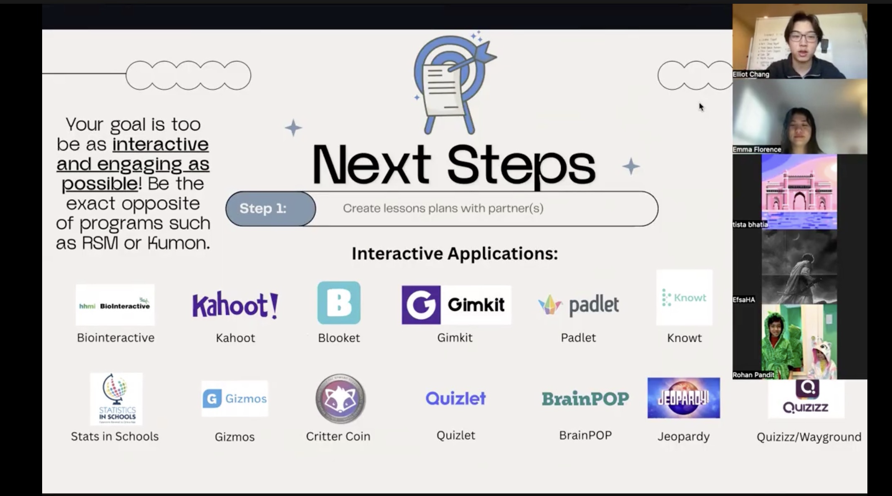
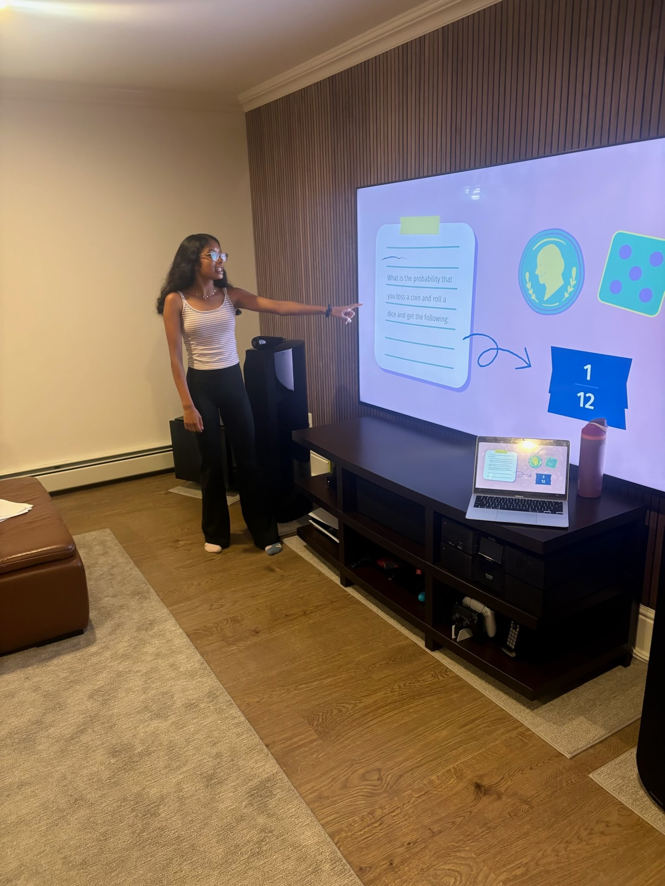

UN4STEM is a global, student-led nonprofit dedicated to expanding access to world-class STEM education. We bridge the gap between complex academic theory and genuine student understanding by connecting passionate high school mentors with younger learners for engaging, interactive, and 100% free instruction.
Built by students, for students.
Explore Programs
Our goal is to foster a generation of confident, STEM-literate students. By prioritizing conceptual clarity and supportive mentorship over rote memorization, we create an environment where curiosity is celebrated and no question is too small.

Statistics show that students in underserved communities are 40% less likely to pursue STEM careers due to a lack of accessible mentorship.
UN4STEM combats this by creating an accessible, student-centered learning environment where geography and financial barriers no longer limit educational opportunity. Through free, high-quality STEM instruction and educational resources, we strive to help students explore their interests and access meaningful pathways in STEM regardless of their background.

Leveraging the unique bond between peers to make advanced scientific concepts relatable and easy to digest.

Comprehensive, step-by-step modules designed to break down high-level curriculum into manageable, logical building blocks.

Our fully digital infrastructure ensures that high-quality STEM education is available to students regardless of their geographic location.

Designed by students who identify precisely where traditional classroom models fail—and how to fix them with empathy.